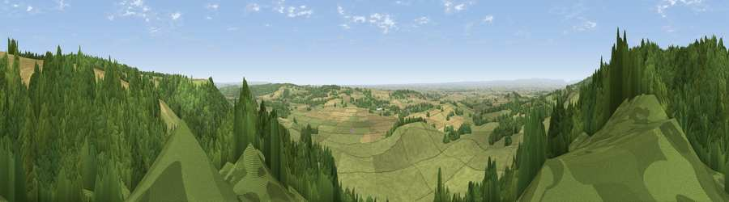

Viewpoint near Wass
#3844 in England · top 10% of its area beats it · near WassWhere it is
The exact computed spot (SE 54500 79675). Click the marker for map links.
The view, rendered

A 360° render of this exact spot computed from the terrain model, tree cover and land cover — summer colours, afternoon light, calibrated against photographs of famous viewpoints. Real trees, hedges and buildings will differ in detail.
The panorama
Grey silhouette: terrain skyline in each direction (720 bearings, Earth curvature and refraction included). Dashed green: skyline with trees (+15 m) and buildings (+8 m) as obstacles. Blue strip: how far the ground is visible on each bearing.
Where the view opens
Wedge length = distance to the farthest visible ground on that bearing (vegetation-aware). Rings at 10, 25 and 50 km.
What fills the view
43% woodland · 41% grassland · 15% cropland
Angular shares of the visible panorama (visual magnitude), not map area. Landscape diversity 0.45 (0–1 Shannon).
Key numbers
More beautiful places nearby
The staircase of upgrades: each row has a higher view potential than everything closer. Driving times are estimates from straight-line distance, calibrated against real road routing — check an actual route before setting out.
| Place | Direction | Drive | Score |
|---|---|---|---|
| Viewpoint near Kilburn | WNW · 4 km | ~9 min | 79.3 |
| Hood Hill | WNW · 4 km | ~10 min | 79.6 |
| Viewpoint near Thirlby | NW · 5 km | ~12 min | 81.5 |
| Beacon Hill | NNW · 22 km | ~36 min | 84.7 |
| Carlton Bank | N · 23 km | ~38 min | 85.1 |
| Roseberry Topping | N · 33 km | ~51 min | 85.8 |
| Viewpoint near Lazenby | N · 39 km | ~58 min | 86.4 |
| Warsett Hill | NNE · 44 km | ~64 min | 86.8 |
54.20993, -1.16587 · source: screening · position refined by local search. Computed location — check access rights before visiting.